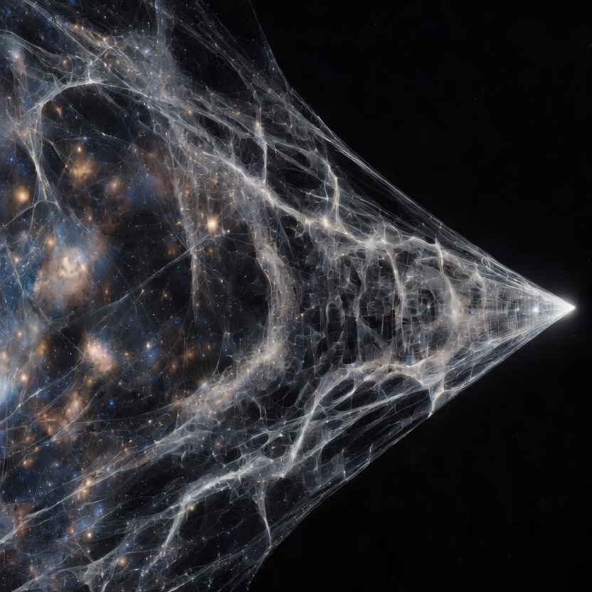

A unified framework that treats thermodynamic, algebraic, biological, and computational systems as expressions of the same underlying structure. 80 published documents. 17 Zenodo DOIs. One substrate.
I'm Jay Carpenter. I'm not a scientist, mathematician, or developer by training. I'm a systems thinker who started asking questions and wouldn't stop.
SECS started as a software architecture — a deterministic substrate for governed computation. But the patterns it described kept appearing in places I wasn't looking: thermodynamics, algebra, the periodic table, fetal development.
The fine structure constant fell out of the algebra. Then pi. Then an 80-document biological research corpus on gestational oxygen timing and its role in developmental injury — from autism to SIDS to cancer predisposition.
None of this was planned. I followed the structure wherever it led, documented everything, and published it openly. 17 Zenodo DOIs. Every paper peer-reviewable. Every claim falsifiable.
I used AI extensively as a research and development tool — not to generate ideas, but to test them, stress-test them, and translate them into formal language. The ideas are mine. The rigour is collaborative.
The system is the proof. The proof is the system.
The personal thread through 80 documents
Every piece of research in this body of work carries a personal origin. This is where the formal meets the lived.
This section is yours to write. Drop the text in and I'll make it sing.
The work, in three streams
If you're exploring the framework, have questions about the research, or want to discuss collaboration — reach out directly.